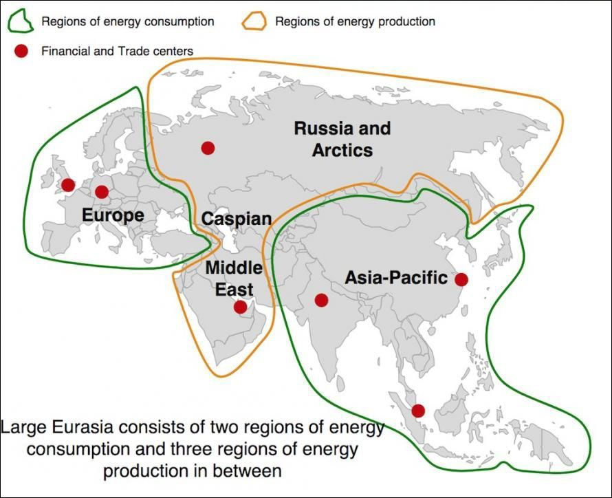

2020-07-02 09:30
洗完澡了精神抖擞容光焕发，上网乱转发现疫情速报当中强调美国国情，说纽约州已经控制住了，加州德州佛州是最新爆发点：
结合最近情报，说「哥伦比亚特区」要作为第51州加入合众国，已经在民主党把持的众议院通过了，但是共和党人放话参议院永远不会通过。因为民主党把以华盛顿市为核心的哥伦比亚特区渗透得如同筛子一般，一旦独立建州，就自动获得两个参议院席位和一个众议院席位。同理可证，波多黎各想从海外领地变联邦成员，也被民主党激烈反对。
既然民主党先挑起「CHANGE」，那就甭管共和党「MAGA」了。本来美国国内增加新州的呼声甚高，随便一搜就有「三岛自由市」「芝加哥都会区」「杰斐逊州」「林肯州」「苏必利尔州」「德玛瓦州」「东田纳西州」「德塞莱特州」之类方案。
当然还有觉得加州德州太大了叫嚣要分而治之的。共和党反对拆分加州，是因为那是民主党票仓；民主党反对拆分德州，是因为那是共和党票仓；而佛州是摇摆州，两党得了便宜就支持，占不着便宜就反对。
不惮以最大的恶意揣测，幕后黑手在南方投毒，是为了拆分加州德州佛州做准备，三州进入紧急状态之后先「联县自治」，然后各奔南北。这时候灌木侠再运用深耕大手情报机构四十余年的人脉，簇拥墨西哥牛屎讲一口流利的西班牙语扮作印第安土著模样混进泥鸽堆里，在「南德州」替共和党站台，在「南加州」给民主党拆台，而在「南佛州」当然继承了户口本爹的政治遗产，一路青云直上主席台。
好一出跌宕起伏的划时代政治斗争精品大作，难怪国际一流和谐宜居之都「高学历精英社交圈」强烈推荐「没什么自由意志，中央情报局已经钦定了」观点，偶尔夹杂着贼秃宣扬「因果报应」牛鼻子叫嚣「兲命气数」，还有定居香港的之江大学历史系高材生鼓吹师尊查博导系列重要讲话精神的核心理念就是「求不得」：想干什么都不行，想要什么都没有，有啥唯物主义积累都抢走，有啥唯心主义成果都剽窃，24×7全方位巡查监视无死角实时响应应景拆台易如反掌，除了一对一帮扶的「家贼」随叫随到之外，还可以外聘「协贼」，三条腿的蛤蟆不好找，两条腿的人渣多少钱一斤？
2020-07-02 19:45
刚爬起来酒劲还在头昏脑胀，挣扎着看完了党国高音喇叭晚七点档定番，发现今日头条位置醒目应景推荐的内容就是「赫哲族」从疍民变农民再变「联俄联共接应义工」急先锋的传奇经历①。这个话题以前在国际一流和谐宜居之都「高学历精英社交圈」已经谈笑风生过了：
知乎问答№161：如何看待穿青人被从汉族中分化出来？然后在一连串「全球拥护香港国安法」的报道之后，就是按照惯例负责逗哏的中年妇女继续狂喷「分管外交和情报工作的美国人民的好总理」彭佩奥，今天甩出来的包袱是挑拨中欧关系②。至于什么「职务行为③」的解释已经懒得重复了，这里就运用色目文艺爱好者津津乐道的娱乐至死的素材解读老布什空降北京四十六年来，大手情报机构是如何「自己抄自己」翻拍经典剧本的：
知乎问答№188：慕容复？相信读者看到这些转述的第一印象正如我当时在南直隶「远东第一体育论坛」看到「绿版天龙八部」的脑洞一样，认为这么写完全可以自圆其说。而如果乐完了之后仔细琢磨，发现剧情走向和细节的设定居然比查博导原版更合理，作为唯物主义证据的契丹人胸前狼头就换成犹太男婴生下来第七天就被割掉的包皮，不排除三洲通衢有真实历史事件参考。而查博导连载原版「香港纸贵」是在1963年，正是国际一流和谐宜居之都惦记着把故宫改总统府，刘少奇大力开展四清运动的风口浪尖上。
不惮以最大的恶意揣测，这套剧本已经被大手情报机构翻拍了许多次，查博导「文思如尿崩，下笔如有神」的背后，是二战结束后以色列复国过程中巴勒斯坦当地居民上演的「求不得」闹剧。而老布什空降北京亲自主持的这次翻拍，还就是以1979年伊朗革命为原型，就连瘫子亚辛的原型都准备好了，邓丕平嫡长子物理兲才邓朴夫。然后「拨乱反正」「科学的春天」乃至杨振宁李政道复兴「关陇集团」，内亚外宾武德充沛从龙入关，叫嚣绿化全中国……所有线索又都串起来了。
看完新闻联播之后上网，发现国际一流和谐宜居之都「高学历精英社交圈」时隔两年五个月零五天，特意把我的一条谈笑风生冠以「私人恩怨」名义以掩盖「政治敏感」的真相：
知乎问答№067：如何看待选项党AFD在州议会选举中攻城略地？还记得多少人嘲笑戈尔巴乔夫，说以一己之力将苏修拆散，然后到处演讲并出版划时代大作《我是如何搞垮苏联的》以稿费糊口，得意忘形肆无忌惮的炫耀当年是怎么作为间谍特务卧底混进体制高举共产主义的伟大旗帜为了颠覆国家政权的光荣目标而正确奋斗，削尖脑袋往上钻终于混成一把手然后把脸一抹显出本相「計画通り」……像不像类似的「极右翼政党」先例？
最近更是应景，多少色目情报掮客炮制美术大作，说川普大统领与戈尔巴乔夫大统领谈笑风生，「程婴杵臼、月照西乡，吾与足下分任之，君为其易，我任其难」，然后大吐苦水，说还是极权体制好吖，增强四个意识坚定四个自信做到两个维护，忠诚不绝对就是绝对不忠诚，上亿党员都是一切行动听指挥，一声令下就能吃纳税人的饭砸组织的锅，比起在共和党内都没能摆平其它大佬还得应付民主党爆料拆台全方位骚扰，苏修解体的任务还是比美帝散伙简单太多了。
这里解释一下，如果没有共和党，现在的美国就是欧盟的样子，如果没有民主党，现在的美国就是内亚五国混合海湾绿国的样子，与字面上听哪尊佛的话跟哪个菩萨走没有任何关系，查找替换关键字而已。
在色目特色宣传阵地当中，多少色目历史爱好者尤其是内亚外宾扼腕叹息，说如果不是戈尔巴乔夫无能或曰叶利钦太狡猾，苏修下一任大统领就是纳扎尔巴耶夫，然后「咱傻哔马瓦力的好日子就要来了」，后面通常是一堆以污言秽语评论时事新闻的回复。
不惮以最大的恶意揣测，1985年苏修戈尔巴乔夫刚冻蒜，英国女王刚松口把香港大政奉还，足协主席刚纠集足球流氓积攒武德，户口本假亲戚就把脸一抹显出本相将我撵得抱头鼠窜，背后就是内亚纳扎尔巴耶费斯库在兲朝境内安插的间谍特务卧底的人事安排调整。
至于家贼贴身紧逼大搞特搞「余粮收集制」也能解释通了，尤其是配合市面上一堆「少废话，快还钱」之类欠一屁股债风向，以及精盎后浪炫耀「出门捡不着钱就算丢」的企业文化，应该是大手情报机构摊派了「筹措竞选经费」的革命任务，有考核目标的，完不成任务的下场，前一篇题外话的结尾已经提到了。
以前提到过，除了专挑我上班和睡觉时间打电话或破门而入骚扰之外，无论我看什么书干什么工作都有家贼泼凉水「有什么用啊」，问起来「什么有用」就说「赚钱最有用」，问起来「啥也不让干怎么赚钱」则神秘回答「佛曰不可说不可说」，更是旁证。众所周知黄赌毒来钱快，但那都是背后有武德撑腰甚至就是大手情报机构关系户的采邑自留地，其它散兵游勇小喽啰，也就能坑蒙拐骗偷了。
线索又都串起来了。
- ① 【走向我们的小康生活】赫哲族：日子越过越红火
- ② 国际锐评：品行恶劣的蓬佩奥企图把欧盟当提线木偶
- ③ 欧亚大陆的能源生产与消费：